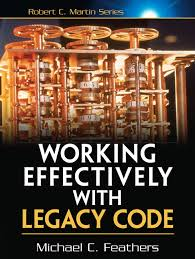
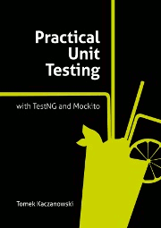
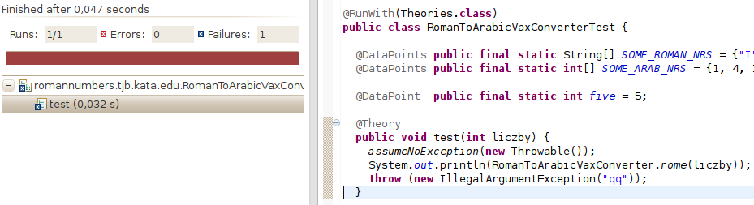
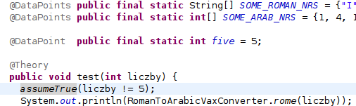
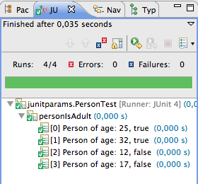
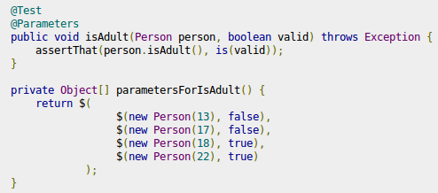
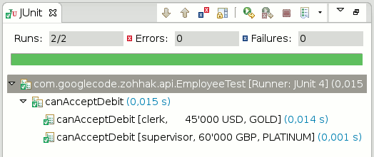
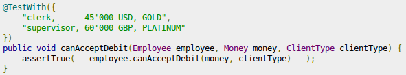

Zaawansowane testowanie - o doborze narzędzi
Powierzchowny przegląd by zaciekawić
Gwarantuję, ktoś przed Tobą borykał się z tym problemem.autor niniejszej prezentacji
|  |  |
- o testach wydajności, niezawodności itp.
- dogłębnie o narzędziach
| Catch Exception |
- jeszcze jeden classloader
- pomiary testów: Emma, Cobertura, JaCoCo...
- Wyjątki
- PowerMockito
- Poziom komplikacji
- Czas
- Droga na skróty


|  |
|  |
|  |
|  |
- Nathan Dolan, SureAssert UC authorOur driving principal is to provide the tooling required to maximize the benefits of both Contract-First Design and Test Driven Development. Sureassert UC amalgamates these concepts by treating unit tests as part of the declared contract of every method and running them automatically. Sureassert Exemplars offer true unit testing capability by isolating the functionality of a single method and enforcing its contract. The tool also provides integration with JUnit, allowing bespoke (coded) tests to be run within the Sureassert testing context; leveraging the tool’s stubbing, coverage reporting and automated execution capabilities.
It is better to use- Tomasz Kaczanowski, "JUnit ExpectedException rule vs Catch-exception"
- @Test(expected = ...) than to not test exceptions at all.
- ExpectedException rule than @Test(expected = ...)
- catch-exception than ExpectedException rule.